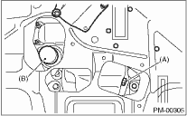

1. Remove the clips at the under cover.

2. Rotate the service hole cover in the direction of the arrow.

3. Remove the engine oil filter.

|
(A) |
Engine oil drain plug |
|
(B) |
Oil filter |
| ST 18332AA000 | OIL FILTER WRENCH (OUTER DIAMETER: 68 MM (2.68 IN) FOR OIL FILTER) |
| ST 18332AA010 | OIL FILTER WRENCH (OUTER DIAMETER: 65 MM (2.56 IN) FOR OIL FILTER) |
CAUTION:
Be careful not to spill the engine oil on exhaust pipe to prevent it from emitting smoke or fire. If engine oil adheres, wipe it off completely.
4. Clean the oil filter installation surface on cylinder block or oil cooler.
5. Obtain a new engine oil filter and apply a thin coat of engine oil to the seal rubber.
CAUTION:
Be careful because the oil filters having an outer diameter of 80 mm (3.15 in) cannot be used.
6. Install the oil filter by turning it by hand, being careful not to damage seal rubber.
(1) Tighten the oil filter 68 mm (2.68 in) in diameter (approx. 1 rotation) after the seal rubber of the oil filter comes in contact with cylinder block or oil cooler. When using a torque wrench, tighten to the following torque values.
Tightening torque
14 N·m (1.4 kgf-m, 10.3 ft-lb)
(2) Tighten the oil filter 65 mm (2.56 in) in diameter (approx. 2/3 — 3/4 rotation) after the seal rubber of the oil filter comes in contact with cylinder block or oil cooler. When using a torque wrench, tighten to the following torque values.
Tightening torque
12 N·m (1.2 kgf-m, 8.8 ft-lb)
CAUTION:
Do not tighten excessively, or oil may leak.
7. After installing the oil filter, refill the specified amount of engine oil. 
NOTE:
The filter element and filter case are permanently jointed; therefore, interior cleaning is not necessary.
8. After installing the oil filter, run the engine and make sure that no oil is leaking around seal rubber.
9. Check the engine oil level.